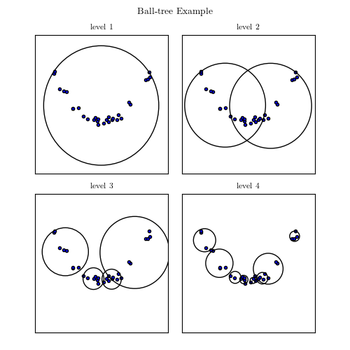

Ball Tree Example¶
This example creates a simple Ball tree partition of a two-dimensional parameter space, and plots a visualization of the result.

# Author: Jake VanderPlas <vanderplas@astro.washington.edu>
# License: BSD
# The figure produced by this code is published in the textbook
# "Statistics, Data Mining, and Machine Learning in Astronomy" (2013)
# For more information, see http://astroML.github.com
import numpy as np
from matplotlib import pyplot as plt
from matplotlib.patches import Circle
# We'll create a BallTree class which will recursively subdivide the
# space into circular regions. Note that this is just an example and
# shouldn't be used for real computation; instead use the optimized
# code in scipy.spatial.cKDTree or sklearn.neighbors.BallTree
class BallTree:
"""Simple Ball tree class"""
# class initialization function
def __init__(self, data):
self.data = np.asarray(data)
# data should be two-dimensional
assert self.data.shape[1] == 2
self.loc = data.mean(0)
self.radius = np.sqrt(np.max(np.sum((self.data - self.loc) ** 2, 1)))
self.child1 = None
self.child2 = None
if len(self.data) > 1:
# sort on the dimension with the largest spread
largest_dim = np.argmax(self.data.max(0) - self.data.min(0))
i_sort = np.argsort(self.data[:, largest_dim])
self.data[:] = self.data[i_sort, :]
# find split point
N = self.data.shape[0]
split_point = 0.5 * (self.data[N / 2, largest_dim]
+ self.data[N / 2 - 1, largest_dim])
# recursively create subnodes
self.child1 = BallTree(self.data[N / 2:])
self.child2 = BallTree(self.data[:N / 2])
def draw_circle(self, ax, depth=None):
"""Recursively plot a visualization of the Ball tree region"""
if depth is None or depth == 0:
circ = Circle(self.loc, self.radius, ec='k', fc='none')
ax.add_patch(circ)
if self.child1 is not None:
if depth is None:
self.child1.draw_circle(ax)
self.child2.draw_circle(ax)
elif depth > 0:
self.child1.draw_circle(ax, depth - 1)
self.child2.draw_circle(ax, depth - 1)
#------------------------------------------------------------
# Create a set of structured random points in two dimensions
np.random.seed(0)
X = np.random.random((30, 2)) * 2 - 1
X[:, 1] *= 0.1
X[:, 1] += X[:, 0] ** 2
#------------------------------------------------------------
# Use our Ball Tree class to recursively divide the space
BT = BallTree(X)
#------------------------------------------------------------
# Plot four different levels of the Ball tree
fig = plt.figure(figsize=(8, 8))
fig.subplots_adjust(wspace=0.1, hspace=0.15,
left=0.1, right=0.9,
bottom=0.05, top=0.9)
for level in range(1, 5):
ax = fig.add_subplot(2, 2, level, xticks=[], yticks=[])
ax.scatter(X[:, 0], X[:, 1])
BT.draw_circle(ax, depth=level - 1)
ax.set_xlim(-1.35, 1.35)
ax.set_ylim(-1.0, 1.7)
ax.set_title('level %i' % level)
# suptitle() adds a title to the entire figure
fig.suptitle('Ball Tree Example', fontsize=18)
plt.show()